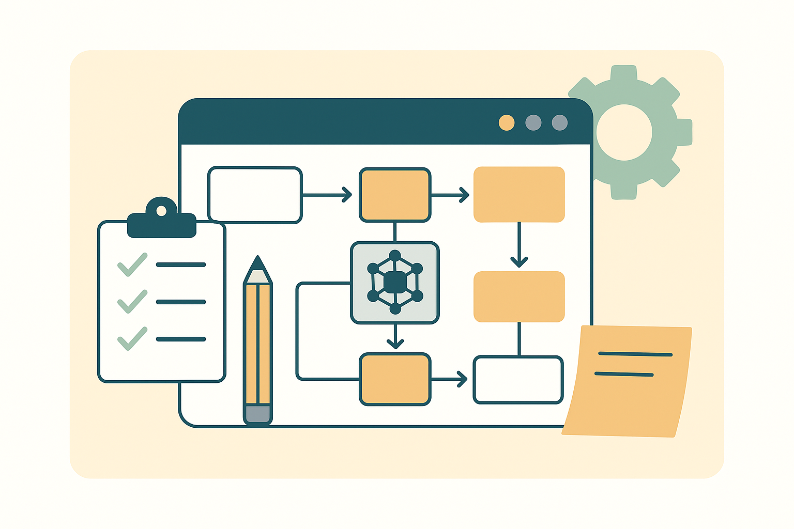
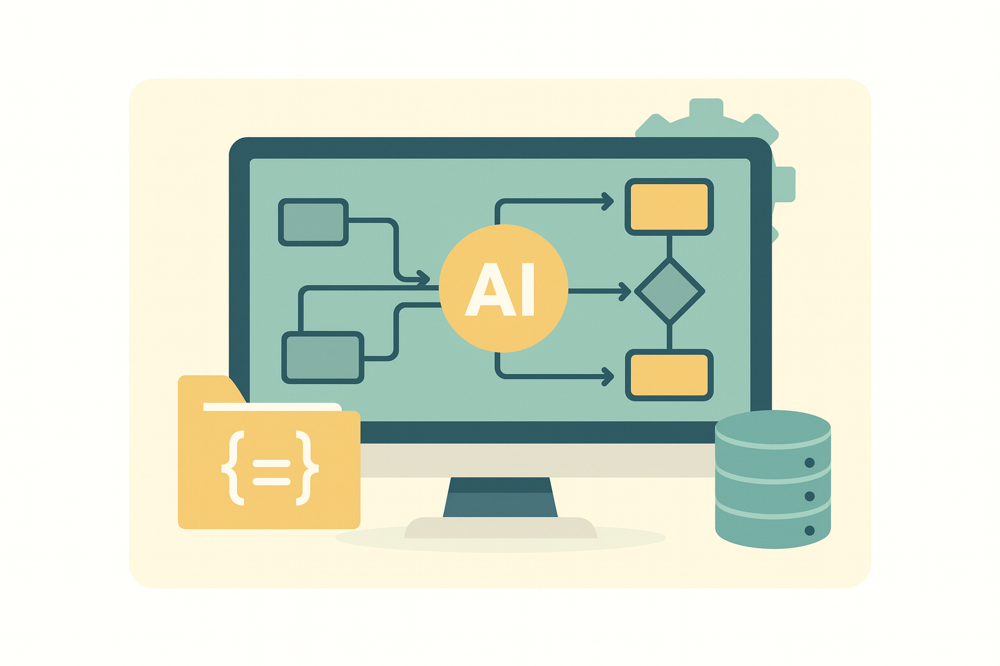
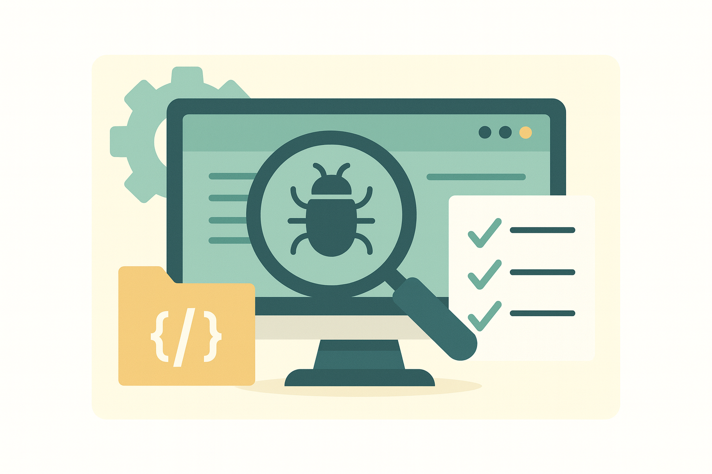

STEP 01-02
需求規劃與任務拆解
利用 ChatGPT 或 Gemini 進行需求規劃，快速釐清功能目標、使用情境與技術可行性。接著將大型功能模組化，切分為具體且可執行的任務項，並標註優先順序。
專業建議：在 prompt 中引導模型考慮「工程可拆解性」與「前後依賴順序」，能有效減少重工與卡關風險。

STEP 03-04
建立任務與方案生成
將任務同步至 Linear 等工具，再讓 Claude Code 針對任務自動產出實作建議，如資料結構、API 設計草圖等，大幅降低前期分析成本。
專業觀察：AI 輸出的質量，取決於任務描述的清晰度與語境完整度，務必在 ticket 中保留上下文資訊。

STEP 05-06
並行開發與自動化 PR
透過 Git Worktrees 讓 Claude Code 並行處理多分支開發。任務完成後，自動建立對應的 Git 分支與 PR，並補上標準化 message，降低手動操作負擔。
專業建議：若團隊有 commit 或 PR 命名規範，建議納入 AI prompt 指引中，以維持整體開發品質一致性。
STEP 07-08
程式審查與手動合併
讓 Claude Code 進行初步靜態程式碼分析，檢查邏輯錯誤或潛在 bug。最終階段仍由人工進行實際功能驗證與測試，確保產品符合期待後再合併。
專業觀察：目前 AI 雖然能生成測試碼，但實際驗證使用情境與 UI/UX 層面，仍需人力介入把關。
